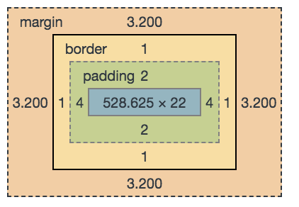

This slide intentionally left blank.
- turn off hot corners
- start dev server for demo
- get my physical notes out for running through the live coding
CSS Fundamentals
A Crash Course in CSS
Created by Jessica Keener / @mistersender
Who am I?
- Senior Software Engineer
- Specializing in UI/UX E-Comm & Mobile
- Polyglot org for ~5 years
Recently Married!

Jessica Kennedy Keener


What We Will Cover
- Syntax & Definitions
- The Cascade
- Semantic CSS
- Methodologies
- Preprocessors
- Things to Google
Syntax & Definitions
CSS
Cascading
Style
Sheet
How HTML markup should Look
Rules
How CSS applies style to HTML elements
This text will be green!
.my-selector {
color: green;
}
Rule Anatomy

Box Model
Elements are generally eitherBlock or Inline.
Inline Elements
Limited ability to style!
spanb,i- etc...
Block Elements
Style everything!
Live Coding!
Example!
Selectors
How CSS knows what elements to apply rules to
element Selectors
Selects all elements
I'll be green
h1 {
color: green;
}
.class Selectors
Selects all elements with a particular class
I'll be green
.my-class-selector {
color: green;
}
#id Selectors
Selects all elements with a particular ID
I'll be green
#my-id-selector {
color: green;
}
Compounding Selectors: pt 1
no space == same element
I'll be green
div.headline {
color: green;
}
/* or */
.headline.fancy {
color: green;
}
Compounding Selectors: pt 2
space == parent/child selector
I'll be green
I'm also green
.headline h1 {
color: green;
}
Easy, right?
What now?
what color will i be?!
h1 {
color: red;
}
h1 {
color: green;
}
What about now?
what color will i be?!
h1 {
color: red;
}
#header {
color: orange;
}
.headline {
color: blue;
}
Now?!
what color will i be?!
div.container h1 {
color: red;
}
#header {
color: orange;
}
.container .headline {
color: blue;
}
Enter: The Cascade
Cascade: Order
"Styles loaded later override those loaded earlier"
Physically lower styles take prescedence
h1 {
color: green;
}
div {
color: blue;
}
h1 {
color: orange; /* h1 will be orange */
}
Cascade: Specificity
"The more specific it is, the more I care."
Sounds Easy, right?
Element Selectors
body section h1 ==
| element |
|---|
| 3 |
.class Selectors
.headline.content .primary .foo ==
| .class |
element |
|---|---|
| 4 | 0 |
#id Selectors
#main #home ==
| #id |
.class |
element |
|---|---|---|
| 2 | 0 | 0 |
Example
body #main.container h1.headline
| #id |
.class |
element |
|---|---|---|
| 1 | 2 | 2 |
Example
div span span span span b i i span span i b
| #id |
.class |
element |
|---|---|---|
| 0 | 0 | 12 |
Which is more specific?
A: div span span span span b i i span span i a
B: .header
A:
| #id |
.class |
element |
|---|---|---|
| 0 | 0 | 12 |
B:
| #id |
.class |
element |
|---|---|---|
| 0 | 1 | 0 |
Which is more specific?
A: #header-content
B: h3.header .header__content
A:
| #id |
.class |
element |
|---|---|---|
| 1 | 0 | 0 |
B:
| #id |
.class |
element |
|---|---|---|
| 0 | 2 | 1 |
Which is more specific?
A: header#header-content h2.title
B: #header-content h2.title
A:
| #id |
.class |
element |
|---|---|---|
| 1 | 1 | 2 |
B:
| #id |
.class |
element |
|---|---|---|
| 1 | 1 | 1 |
Nuclear Options
Use with care!
Styles on elements take prescedence
h1 {
color: green;
}
I'll be purple.
USE SPARINGLY!
!important tags
h1 {
color: orange !important;
}
#headline {
color: red;
}
I'll be orange.
USE SPARINGLY!
Semantics
Aka: Naming stuff.
What would you label this?
- "big"
- "box"
- "white"
- "40in"
- "toys"
What would you label this?
There are only two hard things in computer science: cache invalidation, and naming things. -Phil Carlton
NO.
.floatRight {
float: right
}
.floatLeft {
float: left
}
.Percent70Width {
width: 70%
}
.Percent20Width {
width: 25% /* WHAT?! */
}
.Height200Px {
height: 200px
}
.Height230Px {
height: 230px
}
.clear {
clear: both
}
.textarea {
height: 100px;
width: 100%
}
.displayNone {
display: none
}
#scannerImagePlaceholderDiv {
float: left;
display: block;
width: 250px;
height: 300px
}
.marginBottom30 {
margin-bottom: 30px
}
.Height40Px {
height: 55px /* WHY?! */
}
.centerText {
text-align: center
}
.bulkEditSelectionTable {
margin-left: auto;
margin-right: auto
}
.bulkEditSelectionTable th {
text-align: center;
padding-left: 5px;
padding-right: 5px
}
.bulkEditSelectionTable td {
padding-left: 5px;
padding-right: 5px
}
.width40Percent {
width: 40%
}
.width46Percent {
width: 46%
}
.width10Percent {
width: 10%
}
.width11Percent {
width: 11%
}
.width38Percent {
width: 38%
}
Name it what it IS not what it looks like.
CSS Methodologies
Problems With Traditional CSS development
- Specificity issues
- Difficult to locate styles
- Poor Context (What will break if this is modified?)
- Difficult to maintain consistency
IT CSS
"Inverted Triangle" CSS
Solves the problem of specificity.
Inverted Triangle CSS
 From CSSWizardry (Harry Roberts) @itcss
From CSSWizardry (Harry Roberts) @itcss
From CSSWizardry (Harry Roberts) @itcss

Normal CSS Specificity
From @csswizardry (Harry Roberts)
IT CSS Specificity
From @csswizardry (Harry Roberts)How to structure CSS:
- Elements & Vertical-Rhythm selectors
- General Classes (80% + of code is here)
- Specific style overrides
- Media Query Overrides
BEM
Block | Element | Modifier
Solves the problems of Specificity, Context, & Consistency
Block
The name of the component block.
.card__Element
An element inside of our block
Delineated by: __
card__titlecard__content--Modifier
a change from the default to a block or element
Delineated by: --
card--largecard__title--dangerExample
A Card
Some content
Rendered CSS
(IT CSS :thumbsup:)
.card {
border: 1px solid #ccc;
}
.card__title {
display: block;
background: #008000;
}
.card__title--light {
background: #ccc;
}
.card__content {
padding: 10px;
}
.card--danger {
background: #f00;
}
What are BEM's Benefits?
- Avoids Nesting (single-level specificity)
- Clear picture of what CSS & HTML are doing
- Clearly delineates components
- Not locked in to specific elements for styling
- Scales marvelously
Preprocessors
What is it?
Write CSS more like "real" code
Popular Preprocessors
- Less
- Sass
- Stylus
- Post CSS (technically a post-procesor)
What can it do for me?
Use Variables
site.border := 1px solid #ccc
.table {
border: site.border;
}
.card {
border: site.border;
}
.table {
border: 1px solid #cccccc;
}
.card {
border: 1px solid #cccccc;
}
Not Strict about syntax
.test {
color: green
}
.test
color green
.test
color: green;
/* etc.. */
.test {
color: green;
}
.test {
color: green;
}
.test {
color: green;
}
Nest Selectors
.parent-class {
color: blue;
.child-class {
color: green;
}
}
.parent-class {
color: blue;
}
.parent-class .child-class {
color: green;
}
Auto-Prefixing
.chicken
display: flex
flex-flow: row wrap
justify-content: space-between
align-items: stretch
.chicken {
display: -webkit-box;
display: -webkit-flex;
display: -ms-flexbox;
display: flex;
-webkit-box-pack: justify;
-webkit-justify-content: space-between;
-ms-flex-pack: justify;
justify-content: space-between;
-webkit-box-align: stretch;
-webkit-align-items: stretch;
-ms-flex-align: stretch;
align-items: stretch;
-webkit-flex-wrap: wrap;
-ms-flex-wrap: wrap;
flex-wrap: wrap;
-webkit-flex-basis: 100%;
-ms-flex-preferred-size: 100%;
}
And more!
- Functions
- Looping
- Interpolation
- Inlining Images
Don't forget to add sourcemaps!
Live coding!

Example!
More Reading
Methodologies
- SMACSS - How to structure css to make it scale well
- Namespacing - How to write css classes to make them understandable for developers
- OOCSS - bringing object-oriented approaches into CSS
- Mobile-First - writing code mobile-friendly
Google this!
:before&:afterpseudo elementscalc()currentColor- lobotomized owl selector
* + * - Flexbox & Grid
Questions?
Twitter/Github:
@mistersender